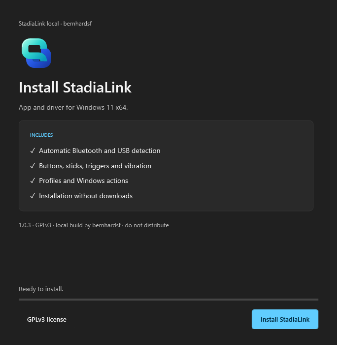
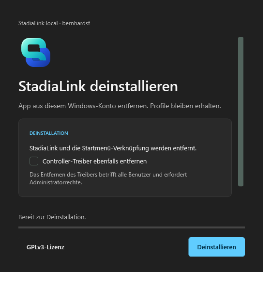

Interactive design preview. No software is installed, updated, or removed. The Windows executables use native title-bar controls; this HTML caption is illustrative.
Actual WPF renders from the setup build. Native title bars are outside these captured client areas. The compact view shows the scrollable body and persistent action area.

